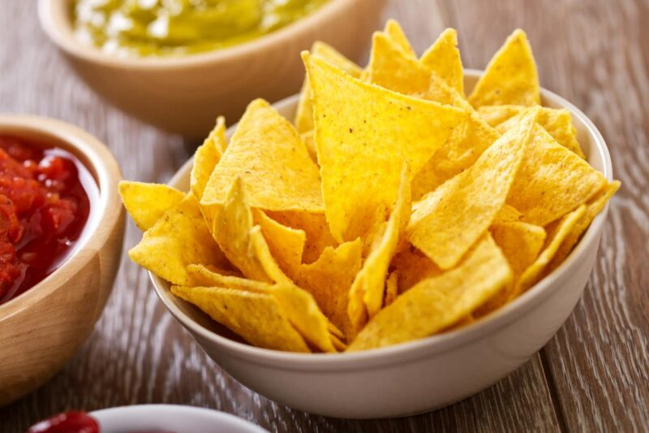

Nachos

Los nachos mexicanos son un plato tradicional de la cocina mexicana que se compone de
tortillas de maíz fritas o horneadas cubiertas con queso y otros ingredientes como carne,
guacamole y salsa.
Ingredients
- 80 ml of olive oil
- 150 g of cornmeal
- 50 g of wheat flour
- 1 pinch of salt
- 1 pinch of pepper
- Water, as needed (approximately 160 ml)
- Optional pinch of paprika
- Pinch of turmeric
- Garlic powder
Steps
- Preheat the oven to high temperature.
- Sift the cornmeal and wheat flour, place in a large bowl and knead a little. Add
salt, pepper and optional paprika.
- Add a dash of olive oil and start incorporating hot water little by little,
letting the flour absorb it.
- Continue incorporating water little by little and kneading while doing so, to get
the nacho dough to become homogeneous. Knead until the dough is no longer sticky.
Once achieved, cover the dough and let it rest for 30 minutes.
- Roll out parchment paper on a flat surface and place the dough on top. Cover with
another sheet of parchment paper and roll out the dough with a rolling pin, trying
to make it as thin as possible.
- Once achieved, lift the parchment paper and cut the dough into triangle shapes.
- Place the parchment paper with the cut nachos on a baking sheet. Freeze for 1 hour.
- After the time has passed, place the baking sheet in the preheated oven at high
temperature. Brush the nachos on top with olive oil. Bake for 10-15 minutes.
- At this point, they can also be fried. Place them in hot oil and when they are
golden brown, place them on absorbent paper to remove excess oil.
- Let them cool and serve.